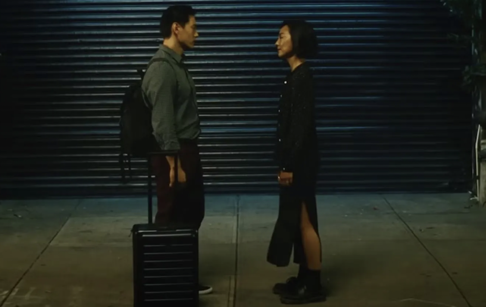
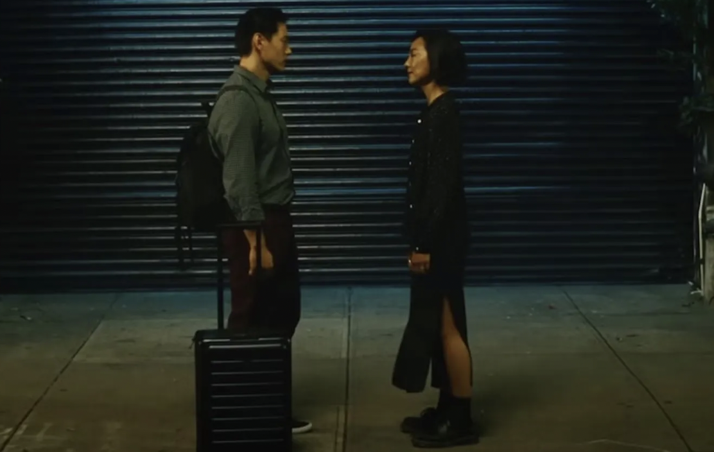

PAST
LIVES
Country/ Countries: South Korea, USA
Language(s): English, Korean
Director: Celine Song
Starring: Greta Lee, Teo Yoo, John Magaro
Synopsis
Nora and Hae Sung, two deeply connected childhood friends, are wrest apart after Nora's family emigrates from South Korea. Decades later, they are reunited for one fateful week as they confront destiny, love and the choices that make a life.
Insight on the film
At the heart of Past Lives is the concept of 'in-yun', a Korean idea of fate that suggests connections
between people are shaped by encounters in past lives. This belief becomes a lens through which Nora and
Hae Sung’s relationship is explored. Rather than focusing on a conventional romantic outcome, the film
treats their bond as something transcendent and fated, suggesting that true connections may exist beyond
the bounds of romance or circumstance. The idea of *in-yun* speaks to a belief in preordained encounters
and serves as a reminder that people come into our lives for reasons beyond what we can control or fully
understand.
The film captures the bittersweet experience of love that remains unconsummated or unresolved. By
reuniting Nora and Hae Sung after decades of separation, Past Lives explores how people sometimes
remain intertwined in each other's lives, even if they are not destined to be together. This theme
speaks to the human tendency to wonder about alternate paths and lives we could have lived. The film
resonates with anyone who has ever pondered “what could have been,” framing these thoughts not as
regrets, but as reminders of life’s complexity and the many forms that love can take.
Past Lives challenges the audience’s assumptions about love and relationships. Rather than focusing on
romantic fulfilment, the film presents Nora and Hae Sung’s connection as something beyond traditional
definitions of romance or friendship. Nora’s husband, Arthur, who is aware of the significance of her
bond with Hae Sung, serves as a reminder of the different ways people support and accept love in
relationships. This dynamic questions traditional boundaries in romantic partnerships, suggesting that
multiple types of love and connection can exist simultaneously.
Throughout the film, language plays a symbolic role in shaping connections and identities. Nora and Hae
Sung’s conversations flow between Korean and English, highlighting both their shared roots and the
distance that has grown between them. The film captures how language can either foster intimacy or
underscore the separations that time, culture, and geography create. Nora’s husband, Arthur, often
observes their conversations without understanding the language, but he is aware of the emotional depth
of their bond, illustrating how understanding transcends words.
What I loved
The film’s open-ended conclusion and its embrace of quiet moments reflect a broader theme of accepting
life’s ambiguities. Past Lives suggests that certain aspects of life and love remain unresolved, and it
finds beauty in this impermanence. Rather than offering clear resolutions, the film encourages viewers
to make peace with the relationships, choices, and opportunities that come and go. This acceptance of
transience is both comforting and poignant, resonating with viewers who have experienced the inevitable
drift of people and paths in their own lives.
Past Lives portrays time as both a unifying and divisive force. While time allows Nora and Hae Sung to
grow individually, it also widens the gap between who they are and who they might have been together.
The movie speaks to the way memories can be both comforting and haunting, as well as how nostalgia
shapes our present and sense of self. The structure of the film, with its focus on specific moments in
time, mirrors the fragmented way we often recall meaningful relationships—as a collection of vivid
memories, rather than a linear story.
Brief on production
Director: Past Lives was the first time Song had directed anything, let alone a feature film. For the
better
part of the 2010s, Song, who graduated from Columbia’s MFA playwriting program, was a regular at
prestigious playwright residencies and fellowships. Song got the initial idea for Past Lives when she
was sitting in a New York City bar with her husband, fellow writer Justin Kuritzkes, and her childhood
best friend who was
visiting from Korea. She was the translator and literal go-between for the two men. “I had become a
bridge or a portal between these two parts of myself,” she explains.
Cinematographer: Tenderly framed by cinematographer Shabier
Kirchner, “Past Lives” gives us careful
close-ups of Nora’s face and Hae Sung’s expressive reactions as vividly as any line of dialogue. During
their long-delayed reunion, the pair move seamlessly from basking in the glow of magic hour on
Brooklyn’s waterfront to sunny trips on the ferry to street-lit walks in the East Village. It’s a
playful comparison to the movie’s earlier setting in Seoul, where, as children, Hae Sung and Na Young
took hilly routes home and played among modern sculptures in a park. No matter where they meet, the
camera creates a sense of their connection, of the feeling that nothing else around them matters as much
as this moment.
Music of The Worst Person in the World
Reviews
Stills


 
